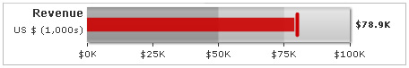
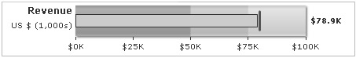
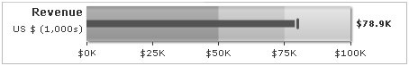
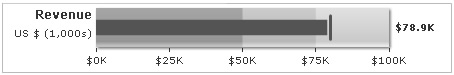
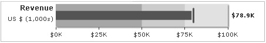
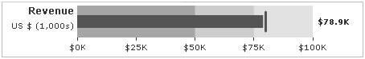
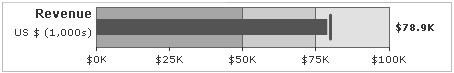
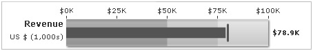
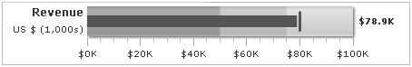
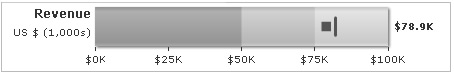

Bullet Graph > Various configurations |
FusionWidgets bullet graphs allow you to configure a lot of its functional and cosmetic properties. Here, we'll see how to:
Let's see each of them one by one. |
| Using palettes |
The bullet graphs offer 5 pre-defined color palettes for you to choose from. Each of these palettes are accessible by the number 1-5. To choose a palette, all you need to do is set: <chart palette='2' or '3' or ..> Shown below are a few examples of palettes applied on our previous graph: |
| Palette 2 applied |
| Palette 3 applied |
| Palette 4 applied |
Additionally, you can also define an entire new palette by setting a single theme color using: <chart paletteThemeColor='669933' palette='2'..> This will create a new palette derived from this color and then color the chart as under: |
| Customizing plot & target properties |
You can customize the plot & target color properties using: <chart ... plotFillColor='CC0000' plotFillAlpha='90' targetColor='CC0000' targetThickness='4' ...> This will result in: |
|  |
You can also add a border to the plot bar using: <chart ... plotFillColor='CCCCCC' showPlotBorder='1' plotBorderColor='333333' plotBorderThickness='1' plotBorderAlpha='100' ..> This will result in: |
|  |
You can configure the thickness (height in horizontal bullet graph; width in vertical bullet graph) of the value bar and target line using: <chart ... plotFillPercent='20' targetFillPercent='25' ...> Here, we've made both the plot bar and target line thinner, as shown below: |
|  |
| Customizing color range properties |
You can specify the color range's gradient mix and ratio in FusionWidgets gradient formula as under: <chart ... colorRangeFillMix='{light-30},{dark-10},{color}' colorRangeFillRatio='5,10,85' ..> This will result in: |
|  |
To get a 2D look (without any gradient), you can set: <chart ... colorRangeFillMix='' ...> This will result in: |
|  |
You can remove the chart's shadow using: <chart ... showShadow='0' ...> This will result in: |
|  |
You can also opt to show color range border using: <chart ... showColorRangeBorder='1' colorRangeBorderColor='666666' colorRangeBorderThickness='1' colorRangeBorderAlpha='100' colorRangeFillMix='' showShadow='0' ..> This will result in: |
|  |
| Tick mark customizations |
In a horizontal bullet graph, you can opt to show tick marks below the graph or above the graph. In a vertical, you can choose whether to show it at left or right. In horizontal, to move the tick marks up, you'll need to set: <chart ... ticksBelowGraph='0' ..> This will result in: |
|  |
You can hide tick marks and values using: <chart ... showTickMarks='0' showTickValues='0' ...> This will result in: |
You can control the number of tick marks using: <chart ... majorTMNumber='6' minorTMNumber='3' ...> This will result in: |
You can customize tick mark properties using: <chart ... majorTMColor='AAAAAA' majorTMAlpha='100' majorTMHeight='10' majorTMThickness='1' minorTMColor='BBBBBB' minorTMAlpha='100' minorTMHeight='6' minorTMThickness='1' ...> This will result in: |
|  |
| Plotting as point instead of bar |
You can opt to show the plot as point, instead of bar, using: <chart ... plotAsDot='1' ...> This will result in: |
|  |
| Hiding chart value |
You can hide chart value by setting: <chart ... showValue='0' chartRightMargin='30' ...> Here, we've also increased the chart's right margin, so that the axis values do not go out of chart. You'll get a chart as under: |